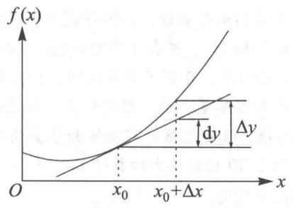
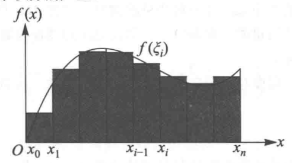

1. 微分

dx=Δxdy=f′(x)dxΔy=dy+O(Δx)f′(x)=dxdy
2. 积分

∫abf(x)dx=λ→0limi=1∑nf(ϵi)Δx
说明：
λ→0：划分越线越好
∑i=1n：所有子区间的面积之和
f(ϵi)：用子区间内一个点的y代表整个区间的y
Δx：子区间的x
3. 微积分的基本定理
3.1. 第一基本定理
设实函数f(x)在闭区间[a,b]上连续，如果
F(x)=∫axf(t)dt
那么F(x)可导，且F′(x)=f(x)
3.2. 第二基本定理 牛顿-莱布尼茨公式
若函数f(x)在[a, b]上连续，且存在原函数F′(x)=f(x)，则f(x)在[a, b]上可积，且
∫abf(x)dx=F(b)−F(a)
3.3. 积分中值定理
若函数f(x)在[a, b]上连续，则在[a, b]上至少存在一点ξ，使得：
∫abf(x)dx=f(ξ)(b−a)